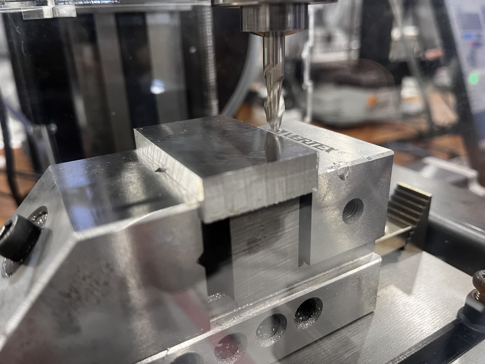
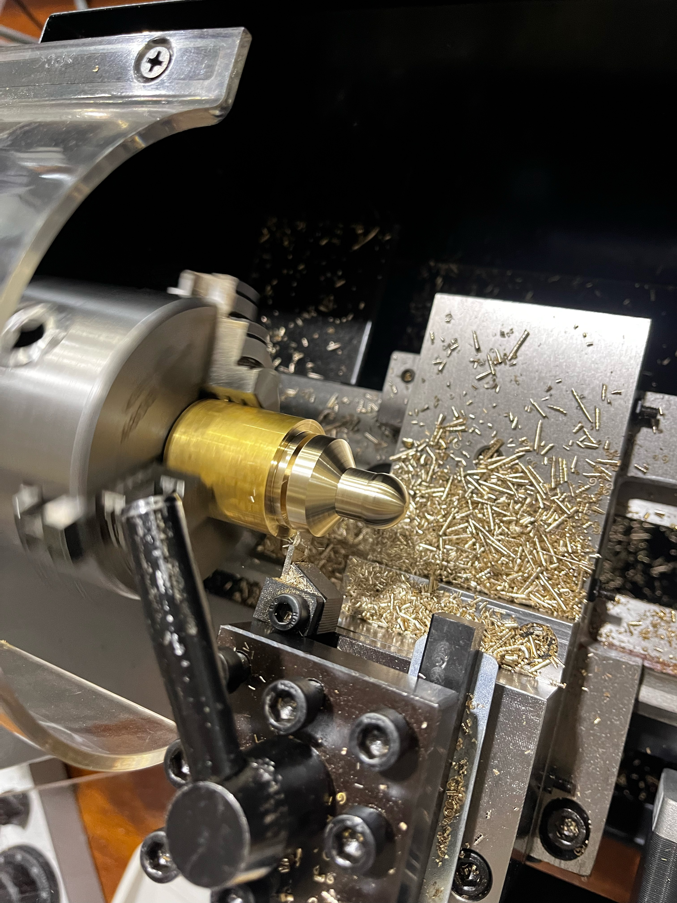

コース紹介
輸送機械や発電所等の産業インフラの設計と運用に必要な技術、水素エネルギー等のクリーンエネルギーの創生と貯蔵に関する技術、自然災害の予測分析や対策に関する技術。 これらを教育課程の特色とし、人のより良い暮らしと環境との共生を実現する技術者の育成を目指します。
実習の様子
エネルギー機械コースの機械工作実習では、旋盤や、ボール盤を使用した空気エンジンの製作などの機械工作やFusionなどのCADソフトを使用した実習を通し、講義科目で学んだ知識と技術について理解を深化・定着させ、それを活用した実践的な設計、製作、解析および評価を 他者と協働して取り組む経験と能力を養っています
 専門科目
- 機械工学概論
- 基礎製図
- 電気・電子回路
- シーケンス制御
- 機械工作実習1
- 材料力学入門
- 熱力学入門
- 流体力学入門
- 機械工作法
- CAD製図
- 機械工作実習2
- 熱力学
まとめ
エネルギー機械コースでは、機械工学とエネルギー分野に特化した高度な専門知識と技術を学ぶことができます。昨今のエネルギー問題や、SDGsなどクリーンな世界に興味がある人、エネルギー分野は、今後も成長が期待される産業です。エネルギー関連の職業に就きたい、またはエネルギー問題に取り組むことで社会に貢献したいと考えている人におすすめするコースです。 また、エネルギー機械コースでは縦のつながりが強いので勉強でに関しての質問や、相談など気軽に先輩方に相談することができます‼ 詳しくは本校ホームページをご覧ください
お問い合わせ
コースについての詳細や質問がある場合は、お気軽にお問い合わせください。
Email:rp22006a@st.omu.ac.jp